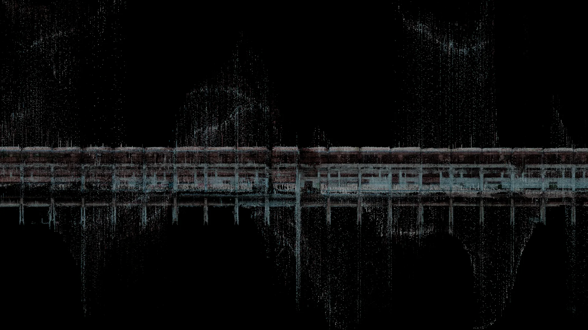
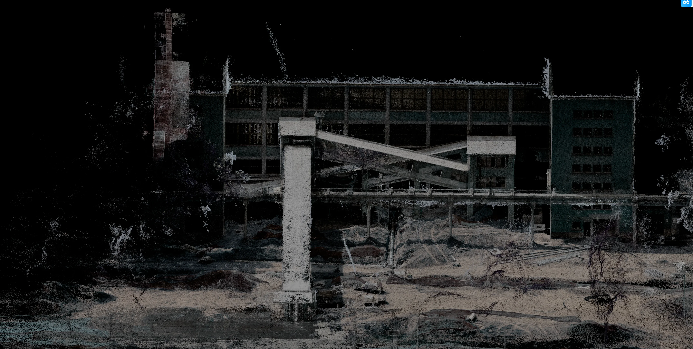
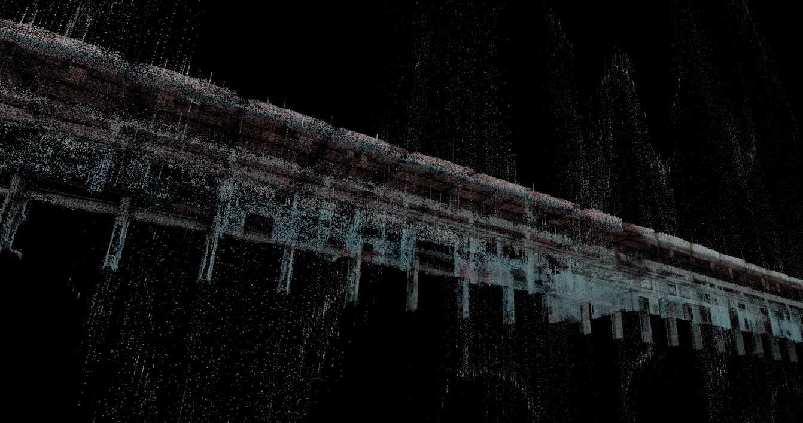
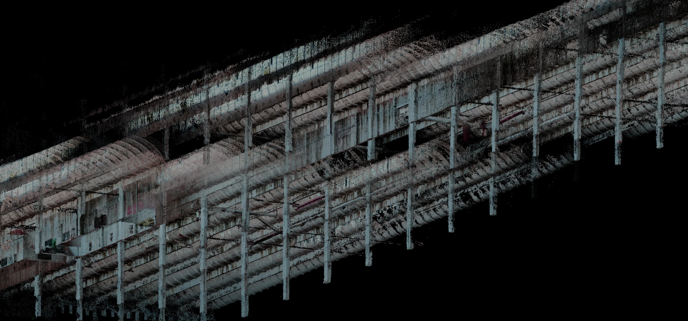

通过空间扫描与点云影像记录建筑的多层结构、立面和内部关系。采集数据经过清理、分层与三维重组，形成可用于空间观察、影像制作、数字预演及后续更新的模型。A spatial capture project documenting the building’s layered structure, façade and interiors through scanning and point-cloud imagery. The data was cleaned, separated and reconstructed into a working model for spatial study, moving-image production, digital previsualisation and later updates.
点云全景、剖面、立面与内部视角共同呈现建筑空间的采集范围和重组结果。Panoramic, sectional, façade and interior views show the scope of capture and the reconstructed spatial model.







从现场数据到可用模型。From site data to a working spatial model.
扫描数据在三维环境中完成去噪、分层、比例校准和坐标整理，再根据空间关系设计镜头与材质。处理后的模型保留真实尺度与结构，可继续用于影像、方案验证和不同版本的空间内容制作。Scan data was denoised, separated, scaled and aligned in 3D before camera paths and material treatments were developed. The resulting model retains the site’s real proportions and structure, making it suitable for moving image, design validation and future spatial-content versions.
- 项目Project
- SYSTEM × ERSHA 建筑空间扫描SYSTEM × ERSHA — Spatial Capture
- 形式Format
- 空间扫描 / 点云影像 / 建筑空间观察Spatial scanning / point-cloud media / architectural study
- VIRTURA 职责VIRTURA Role
- 空间采集、点云数据处理、三维重组、镜头预演与影像输出Spatial capture, point-cloud processing, 3D reconstruction, camera previsualisation and moving-image output